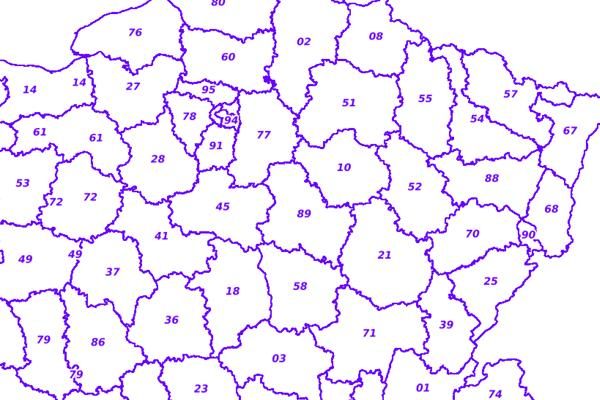

from owslib.wms import WebMapService
from owslib.wfs import WebFeatureService
import pandas as pdWeb Services de l’OGC
Nous allons utiliser la bibliothèque OWSLib qui permet d’accéder aux différents services Web compatibles avec les standards de l’OGC (WMS, WFS, WMTS, WPS, CSW, etc.)
Préambule
Nous importons ici les bibliothèques que nous allons utiliser dans le notebook.
Les URLs des services que nous souhaitons explorer.
url_wms_raster_geoportail = 'https://wxs.ign.fr/essentiels/geoportail/r/wms?SERVICE=WMS&VERSION=1.3.0&REQUEST=GetCapabilities'
url_wfs_geoportail = 'https://wxs.ign.fr/essentiels/geoportail/wfs?SERVICE=WFS&VERSION=2.0.0&REQUEST=GetCapabilities'WMS
Explorons le contenu du serveur WMS du geoportail de l’IGN :
wms = WebMapService(url_wms_raster_geoportail, version='1.3.0')
wms<owslib.map.wms130.WebMapService_1_3_0 at 0x7f93977e8e80>L’object de type WebMapService qui est contenu dans la variable wms contient des attributs décrivant le Web Service en question (attribut identification par exemple), un attribut décrivant les différents opérations supportées (operations) et un attribut décrivant les différentes couche qu’il fournit (contents) :
wms.identification.title'Service WMS Raster Geoportail Publics'wms.identification.type'WMS'wms.identification.version'1.3.0'wms.identification.abstract"Ce service permet la visualisation de couches de données raster IGN au travers d'un flux WMS"Lister les opérations supportées :
wms.operations[<owslib.map.wms130.OperationMetadata at 0x7f93977e8730>,
<owslib.map.wms130.OperationMetadata at 0x7f93977e80a0>,
<owslib.map.wms130.OperationMetadata at 0x7f93977e9150>]Chaque opération est décrite par un objet de type OperationMetadata, utilisons une bouche pour afficher le nom de chaque opération :
for op in wms.operations:
print(op.name)GetCapabilities
GetMap
GetFeatureInfoListe des couches disponibles :
wms.contentsOrderedDict([('CADASTRALPARCELS.PARCELLAIRE_EXPRESS',
<owslib.map.wms130.ContentMetadata at 0x7f93977e8580>),
('GEOGRAPHICALGRIDSYSTEMS.PLANIGNV2',
<owslib.map.wms130.ContentMetadata at 0x7f93976ec670>),
('LIMITES_ADMINISTRATIVES_EXPRESS.LATEST',
<owslib.map.wms130.ContentMetadata at 0x7f93978015d0>),
('ORTHOIMAGERY.ORTHOPHOTOS',
<owslib.map.wms130.ContentMetadata at 0x7f9397801d80>)])list(wms.contents)['CADASTRALPARCELS.PARCELLAIRE_EXPRESS',
'GEOGRAPHICALGRIDSYSTEMS.PLANIGNV2',
'LIMITES_ADMINISTRATIVES_EXPRESS.LATEST',
'ORTHOIMAGERY.ORTHOPHOTOS']On peut explorer les attributs de chacune des couches en utilisant l’objet WebMapService comme un dictionnaire et en utilisant les noms des couches comme des clés.
parcellaire_express = wms['CADASTRALPARCELS.PARCELLAIRE_EXPRESS']
parcellaire_express<owslib.map.wms130.ContentMetadata at 0x7f93977e8580>L’objet qui est retourné dispose de plusieurs attributs décrivant la couche en question : tile, abstract, boundingBoxWGS84, crsOptions etc.
parcellaire_express.title'PCI vecteur'parcellaire_express.abstract'Plan cadastral informatisé vecteur de la DGFIP.'parcellaire_express.styles{'PCI vecteur': {'title': 'PCI vecteur',
'legend': 'https://wxs.ign.fr/static/legends/CADASTRALPARCELS.PARCELLAIRE_EXPRESS.png',
'legend_width': '300',
'legend_height': '183',
'legend_format': 'image/png'},
'normal': {'title': 'Légende générique',
'legend': 'https://wxs.ign.fr/static/legends/LEGEND.jpg',
'legend_width': '200',
'legend_height': '200',
'legend_format': 'image/jpeg'}}parcellaire_express.boundingBoxWGS84(-63.372521503, -21.475586668, 55.925864577, 51.312119281)parcellaire_express.crsOptions['EPSG:4558',
'EPSG:2971',
'IGNF:REUN47GEO',
'EPSG:4463',
'IGNF:LAMB2C',
'EPSG:2976',
'EPSG:2972',
'IGNF:CSG67GEO',
'IGNF:RGM04GEO',
'IGNF:UTM39SW84',
'EPSG:27571',
'EPSG:27582',
'EPSG:27564',
'EPSG:2987',
'IGNF:UTM30W84',
'EPSG:2973',
'EPSG:3945',
'EPSG:2989',
'EPSG:27584',
'EPSG:21781',
'EPSG:3296',
'EPSG:2981',
'EPSG:4275',
'EPSG:4807',
'IGNF:UTM20W84MART',
'IGNF:RGF93CC50',
'IGNF:LAMB1C',
'IGNF:WGS84UTM20',
'IGNF:RGF93CC43',
'IGNF:REUN47GAUSSL',
'EPSG:4641',
'EPSG:32621',
'EPSG:23031',
'EPSG:4690',
'EPSG:23030',
'EPSG:4258',
'IGNF:RGF93CC44',
'IGNF:WGS84G',
'EPSG:27572',
'IGNF:RGPFUTM5S',
'EPSG:4638',
'EPSG:27561',
'EPSG:2977',
'EPSG:3034',
'EPSG:32738',
'IGNF:MAYO50GEO',
'IGNF:GUAD48GEO',
'EPSG:3044',
'EPSG:27563',
'IGNF:RGF93CC45',
'EPSG:2980',
'IGNF:LAMB4C',
'EPSG:4627',
'IGNF:LAMB2',
'EPSG:4630',
'IGNF:CSG67UTM21',
'EPSG:3949',
'EPSG:3043',
'EPSG:4470',
'IGNF:TAHI79UTM6S',
'EPSG:4467',
'EPSG:3171',
'EPSG:32701',
'IGNF:RGSPM06U21',
'EPSG:2975',
'EPSG:3298',
'EPSG:27594',
'IGNF:RGF93CC42',
'EPSG:4624',
'EPSG:32631',
'EPSG:2970',
'EPSG:2990',
'EPSG:2978',
'IGNF:LAMBE',
'EPSG:3948',
'EPSG:3943',
'EPSG:3305',
'EPSG:32622',
'EPSG:3312',
'EPSG:32739',
'IGNF:UTM01SW84',
'IGNF:LAMB4',
'IGNF:RGF93CC46',
'IGNF:STPM50UTM21',
'EPSG:32630',
'EPSG:4633',
'EPSG:4644',
'EPSG:3942',
'EPSG:4749',
'IGNF:UTM31W84',
'EPSG:27583',
'IGNF:GUADFM49U20',
'EPSG:4559',
'IGNF:UTM22RGFG95',
'EPSG:4629',
'IGNF:RGF93CC48',
'EPSG:4637',
'IGNF:GUAD48UTM20',
'IGNF:LAMB3',
'IGNF:LAMB1',
'EPSG:3170',
'IGNF:WALL78UTM1S',
'IGNF:RGM04UTM38S',
'EPSG:27573',
'EPSG:3172',
'EPSG:4623',
'IGNF:RGPFUTM6S',
'EPSG:4626',
'EPSG:27562',
'EPSG:32707',
'IGNF:RGFG95GEO',
'EPSG:3857',
'EPSG:32740',
'EPSG:23032',
'EPSG:27592',
'IGNF:STPM50GEO',
'EPSG:4687',
'IGNF:MART38UTM20',
'EPSG:3035',
'EPSG:4691',
'IGNF:UTM20W84',
'EPSG:4622',
'IGNF:RGF93G',
'EPSG:4471',
'IGNF:RGR92GEO',
'IGNF:MAYO50UTM38S',
'EPSG:32706',
'EPSG:4171',
'EPSG:4689',
'EPSG:3304',
'EPSG:4628',
'EPSG:3946',
'EPSG:4643',
'IGNF:UTM20W84GUAD',
'EPSG:3950',
'EPSG:4639',
'EPSG:27581',
'EPSG:3042',
'EPSG:3727',
'IGNF:RGR92UTM40S',
'EPSG:3313',
'EPSG:3944',
'IGNF:TAHI51UTM06S',
'EPSG:32632',
'IGNF:RGF93CC47',
'IGNF:GUADFM49GEO',
'IGNF:LAMB3C',
'EPSG:4642',
'EPSG:3297',
'IGNF:CSG67UTM22',
'IGNF:UTM32W84',
'EPSG:27591',
'EPSG:4688',
'EPSG:4692',
'EPSG:4632',
'EPSG:4636',
'EPSG:3947',
'EPSG:2154',
'EPSG:4621',
'IGNF:LAMB93',
'IGNF:RGF93CC49',
'EPSG:4326',
'EPSG:2969',
'EPSG:3302',
'EPSG:4625',
'CRS:84',
'IGNF:IGN63UTM7S',
'EPSG:2988',
'EPSG:3303',
'IGNF:RGPFUTM7S',
'EPSG:32620',
'EPSG:32705',
'IGNF:MART38GEO',
'EPSG:27574',
'EPSG:27593',
'EPSG:3306']img = wms.getmap(
layers=['CADASTRALPARCELS.PARCELLAIRE_EXPRESS'],
size=[600, 400],
srs="EPSG:4326",
bbox=[-1.0, 46.0, 8.0, 50.0],
format="image/jpeg")On peut afficher l’image dans le notebook :
from IPython.display import ImageImage(img.read())
Ou la sauvegarder :
with open('/tmp/image.jpeg', 'wb') as f:
f.write(img.read())Et pour récupérer automatiquement des informations sur chacune des couches ?
# Une liste vide
result = []
# Une boucle sur les nom de couche disponibles
for layer_name in wms.contents:
# Une référence aux metadonnées de la couche en question
layer = wms[layer_name]
# Un dictionnaire pour stocker les métadonnes
# qui nous intéresse pour chaque couche
data = {
"id": layer_name,
"title": layer.title
}
# On ajoute le résultat à la liste "result"
result.append(data)On a donc créé une liste (un objet Python de type list) contenant plusieurs dictionnaires (objet Python de type dict), autant qu’il y a de couches décrites par le serveur WMS que nous explorons.
result[{'id': 'CADASTRALPARCELS.PARCELLAIRE_EXPRESS', 'title': 'PCI vecteur'},
{'id': 'GEOGRAPHICALGRIDSYSTEMS.PLANIGNV2', 'title': 'Plan IGN v2'},
{'id': 'LIMITES_ADMINISTRATIVES_EXPRESS.LATEST',
'title': 'Limites administratives mises à jour en continu.'},
{'id': 'ORTHOIMAGERY.ORTHOPHOTOS', 'title': 'Photographies aériennes'}]Écrire dans un fichier CSV ou dans un fichier excel
La bibliothèque standard de Python propose le module csv qui va permettre de manipuler facilement des fichiers CSV (lecture, écriture)
Pour écrire ou lire des tableurs dans des formats plus compliqués (XLS, XLSX, ODS, etc.) il va être nécessaire d’utiliser des bibliothèques tiers (la bibliothèque pandas par exemple).
df = pd.DataFrame(result)df| id | title | |
|---|---|---|
| 0 | CADASTRALPARCELS.PARCELLAIRE_EXPRESS | PCI vecteur |
| 1 | GEOGRAPHICALGRIDSYSTEMS.PLANIGNV2 | Plan IGN v2 |
| 2 | LIMITES_ADMINISTRATIVES_EXPRESS.LATEST | Limites administratives mises à jour en continu. |
| 3 | ORTHOIMAGERY.ORTHOPHOTOS | Photographies aériennes |
df.to_csv('/tmp/mon_fichier.csv', index=False)%cat /tmp/mon_fichier.csvid,title
CADASTRALPARCELS.PARCELLAIRE_EXPRESS,PCI vecteur
GEOGRAPHICALGRIDSYSTEMS.PLANIGNV2,Plan IGN v2
LIMITES_ADMINISTRATIVES_EXPRESS.LATEST,Limites administratives mises à jour en continu.
ORTHOIMAGERY.ORTHOPHOTOS,Photographies aériennesExercice - WFS
Explorons désormais le contenu du serveur WFS du geoportail de l’IGN (dont l’url est contenue dans la variable url_wfs_geoportail).
Répéter les opérations présentées ci-dessus mais sur le flux WFS suivant :
wfs = WebFeatureService(url_wfs_geoportail, version='2.0.0')Pour chaque couche, vous devez stocker son identifiant, son titre, sa description et sa bounding-box en WGS84.
Le tableur obtenu doit ainsi être de la forme suivante :
| Couche | Titre | Abstract | Bounding Box WGS84 |
|---|---|---|---|
| CADASTRALPARCELS.PARCELLAIRE_EXPRESS | PCI vecteur | Plan cadastral informatisé vecteur de la DGFIP. | A, B, C, D |
| GEOGRAPHICALGRIDSYSTEMS.PLANIGNV2 | Plan IGN v2 | Cartographie multi-échelles sur le territoire national, issue des bases de données vecteur de l’IGN, mis à jour régulièrement et réalisée selon un processus entièrement automatisé. | A, B, C, D |
Vous devez stocker ces informations sous forme d’une liste de dictionnaires, puis convertir le résultat en un objet DataFrame et exportez le résultat au format CSV (méthode to_csv) ou au format Excel (méthode to_excel).
À vous de jouer…!
Solution
# On se connecte au service WFS souhaité
wfs = WebFeatureService(url_wfs_geoportail, version='2.0.0')
# Une liste vide pour accueillir les résultats
resultat = []
# On fait une boucle sur la liste contenant les noms de couche
for l_name in wfs.contents:
# On stocke une référence à l'objet ContentMetadata
# décrivant la couche avec le nom contenu dans la variable "l_name"
l = wfs[l_name]
# On créé un dictionnaire pour stocker la description de cette couche
d = {
'Couche': layer_name,
'Title': l.title,
'Description': l.abstract,
'Bounding Box WGS84': str(l.boundingBoxWGS84).replace('(', '').replace(')', '')
}
# Ajout à la list de résultats
resultat.append(d)
# Convertir notre liste de dictionnaires en
# un DataFrame pandas
df_wfs = pd.DataFrame(resultat)
# Export vers un fichier
df_wfs.to_csv('/tmp/wfs_geoportail_description.csv', index=False)Aperçu du fichier CSV exporté :
%cat /tmp/wfs_geoportail_description.csvCouche,Title,Description,Bounding Box WGS84
ORTHOIMAGERY.ORTHOPHOTOS,BDTOPO_V3:batiment.title,BDTOPO V3 23.3 édition 2023,"-63.153333951602704, -21.389720340767205, 55.8367590264458, 51.3127196937117"
ORTHOIMAGERY.ORTHOPHOTOS,BDTOPO_V3:troncon_de_route.title,BDTOPO V3 23.3 édition 2023,"-63.153333951602704, -21.389720340767205, 55.8367590264458, 51.3127196937117"
ORTHOIMAGERY.ORTHOPHOTOS,CADASTRALPARCELS.PARCELLAIRE_EXPRESS:parcelle.title,Plan cadastral informatisé vecteur de la DGFIP édition 07-2023.,"-63.15331686629, -21.3897472604766, 55.8366858738437, 51.088897403453"